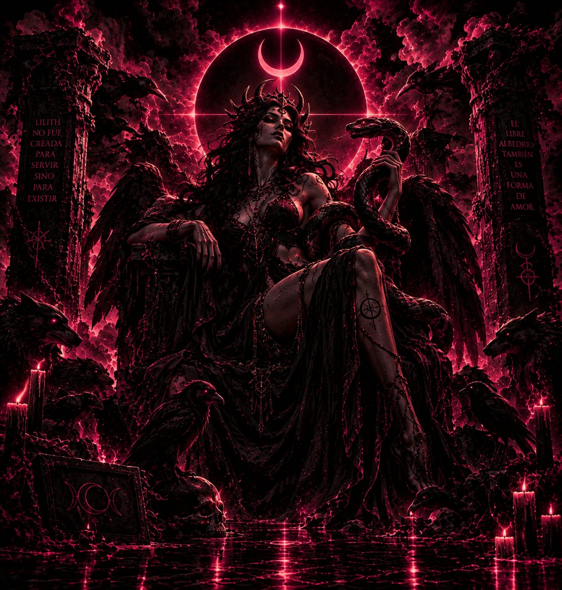

INDEPENDENCIA
Representa la voluntad de decidir sobre el propio destino y rechazar las imposiciones externas.
ARCHIVO DE ENTIDADES · REGISTRO 02
LA FIGURA DE LA REBELDÍA Y LA NOCHE
Lilith es una figura presente en distintas tradiciones mitológicas y religiosas. Su historia evolucionó a través de los siglos, convirtiéndola en un símbolo asociado con la independencia, la oscuridad y lo desconocido.
EXPLORAR REGISTRO VOLVER AL ARCHIVO
REGISTRO HISTÓRICO
Las raíces de Lilith se relacionan con antiguas tradiciones mesopotámicas, donde aparecen seres y espíritus conocidos mediante términos como lilītu. Con el paso del tiempo, estas figuras se relacionaron con las tradiciones judías, dando lugar a diferentes interpretaciones. Una de las narraciones más conocidas aparece en el Alphabet of Ben Sira, una obra medieval que presenta a Lilith como la primera esposa de Adán. Según este relato, Lilith abandona el Edén después de negarse a aceptar una posición de subordinación. Esta historia contribuyó a convertirla en una figura asociada con la rebeldía, la autonomía y la transgresión.
INTERPRETACIÓN SIMBÓLICA
Más allá de sus relatos, Lilith representa diferentes ideas relacionadas con la libertad, la noche y la naturaleza indomable.
Representa la voluntad de decidir sobre el propio destino y rechazar las imposiciones externas.
Su asociación con la noche refleja aquello que permanece oculto, desconocido y fuera de lo convencional.
En algunas interpretaciones modernas, simboliza la resistencia frente a la autoridad y las estructuras de subordinación.
BIBLIOTECA DEL ARCHIVO
Textos y estudios que permiten explorar la evolución histórica de la figura de Lilith.
Recopilación sobre Lilith dentro de la demonología judía y sus antecedentes en las antiguas tradiciones mesopotámicas.
CONSULTAR FUENTEInvestigación académica sobre las primeras tradiciones judías de Lilith y su representación en el Alphabet of Ben Sira.
CONSULTAR INVESTIGACIÓNEstudio académico sobre la evolución de las figuras demoníacas en las tradiciones antiguas y los relatos relacionados con Lilith.
CONSULTAR DOCUMENTO